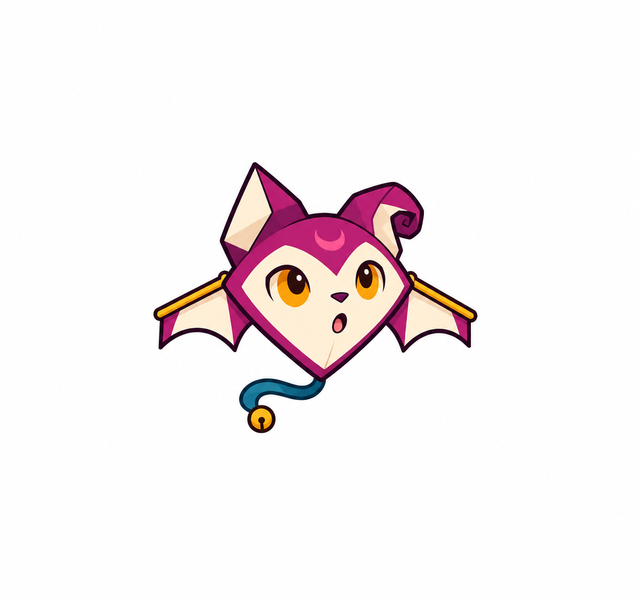
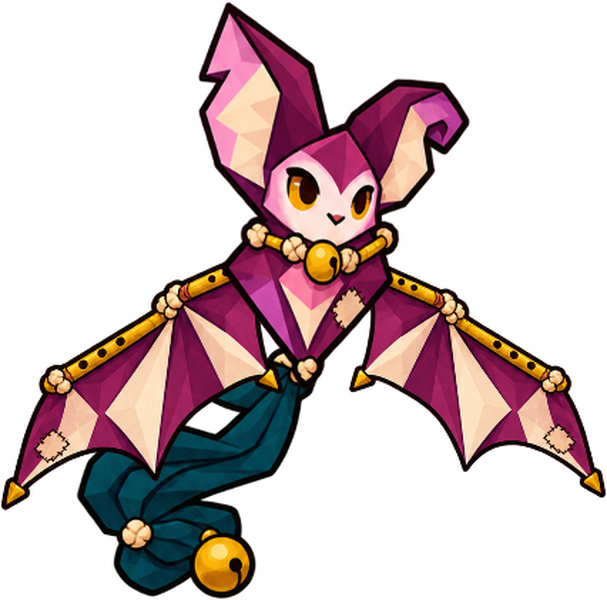
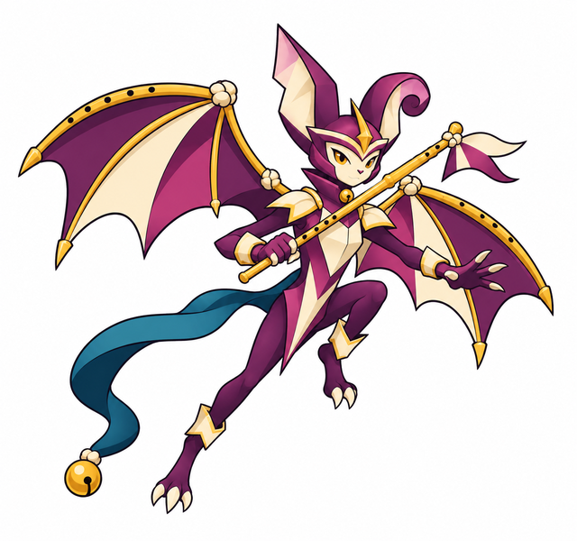
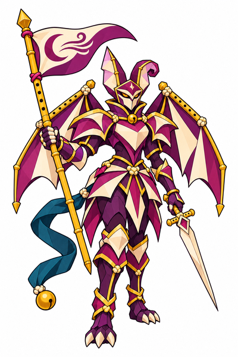

SussurimBebê · propostaEscutar e responderDescobre escuta, equilíbrio e resposta ao primeiro som.Arte completa · Brief e origem
FlautrevoCriança existente · visual aprovadoRecolher notasRecolhe assobios esquecidos e cria trilhas de vento no catálogo existente.Arte completa · Brief e origem
VesperinaJovem arauto · propostaSinalizar caminhosAprende a orientar os outros sem transformar a melodia em imposição.Arte completa · Brief e origem
VesperáliaAdulta cavaleira · visual aprovadoConduzir e protegerAssume responsabilidade de conduzir; voto de respeitar a escolha alheia continua proposta.Arte completa · Brief e origem